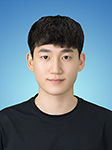
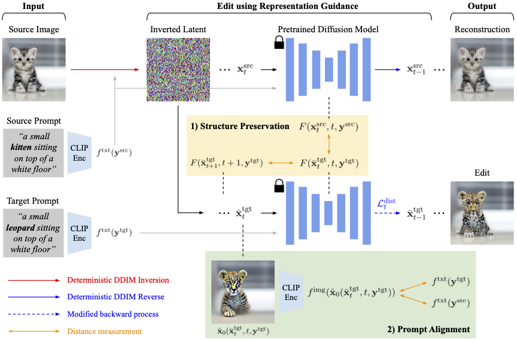
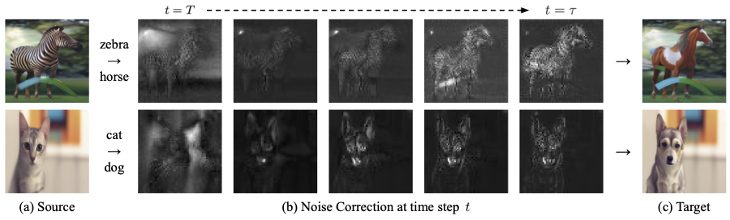
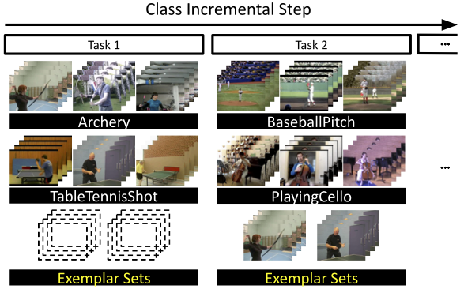

|  |
Minsoo Kang
|
M.S. & Ph.D. integrated course, Computer Vision Lab, Seoul National University (Mar. 2018 – Feb. 2024)
B.S. School of Electrical Engineering, POSTECH (Mar. 2011 – Feb. 2018)
Research Engineer at SK Telecom (Jan. 2025 – Current)
Staff Engineer at Samsung Advanced Institute of Technology (Mar. 2024 – Dec. 2024)
Research Intern at Kakao Brain (Jan. 2022 – Aug. 2022)
|  |
Diffusion-Based Conditional Image Editing through Optimized Inference with Guidance
|
|  |
Diffusion-Based Image-to-Image Translation by Noise Correction via Prompt Interpolation
|
|
Conditional Score Guidance for Text-Driven Image-to-Image Translation
|
|
Variational Distribution Learning for Unsupervised Text-to-Image Generation
|
|
Information-Theoretic GAN Compression with Variational Energy-based Model |
|
Class-Incremental Learning by Knowledge Distillation with Adaptive Feature Consolidation |
|  |
Class-Incremental Learning for Action Recognition in Videos |
|
Operation-Aware Soft Channel Pruning using Differentiable Masks |
|
Towards Oracle Knowledge Distillation with Neural Architecture Search
|
NeurIPS Scholar Award, 2022
Youlchon Scholarship, 2022
Google Student Travel Grants for CVPR, 2022
Silver Prize, Korean Mathematical Olympiad (KMO), 2010